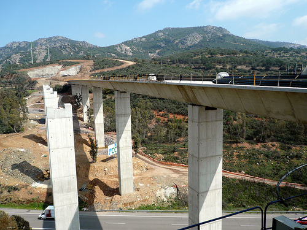
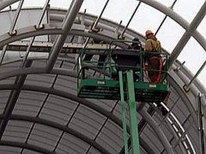

Hune suministra plataformas para el AVE
Fecha 2/2/2009 10:30:00 | Tema: Nº402
La maquinaria de HUNE ha facilitado los trabajos en una sección que conectará varios pueblos de la provincia de Toledo. En concreto, 46 plataformas elevadoras de la compañía HUNE han intervenido ya en esta infraestructura, que forma parte de la línea de Alta Velocidad (AVE) entre Madrid y el Levante.
Trabajos 
Poco a poco, el AVE, tren de alta velocidad, se va extendiendo por toda la geografía española, conectando provincias lejanas en pocas horas, o mejorando las comunicaciones entre ciudadades o pueblos que están próximos entre sí. Las empresas responsables de las diferentes líneas del AVE han requerido la maquinaria de HUNE en varias ocasiones para realizar trabajos en altura o que necesitaban gran precisión. Así, las plataformas elevadoras de la compañía han intervenido, hasta el momento, en la construcción de viaductos y túneles para el paso del tren en las ciudades de Barcelona, Alicante y Málaga.
Maquinaria usada 
En esta ocasión, HUNE ha servido un total de 46 plataformas elevadoras para las secciones de Torrejón de Velasco-Seseña, Aranjuez-Ontígola y Ontígola-Ocaña. La distancia total entre estas secciones suma más de 27 Km. a través de la ciudad de Toledo. Los trabajos que están realizando son variados, e incluyen la construcción de pasos superiores e inferiores, viaductos y falsos túneles, entre otros elementos peculiares del diseño. La complejidad de estas obras requiere la presencia de plataformas articuladas de 16 y 18 metros de altura, telescópicas de 22 metros de altura y tijeras diesel de 10 metros. Entre éstas máquinas, las más numerosas son las articuladas de 16 metros que, además de su elevación y del alcance horizontal de su brazo, aportan una gran capacidad de operación, indispensable para superar tanto los obstáculos propios de las obras como de la orografía del terreno. Está previsto que la maquinaria de HUNE forme parte de este proyecto, como mínimo, hasta abril de 2009, lo que implicará la entrada de nuevas plataformas de la compañía.